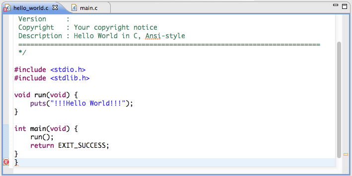
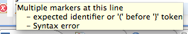
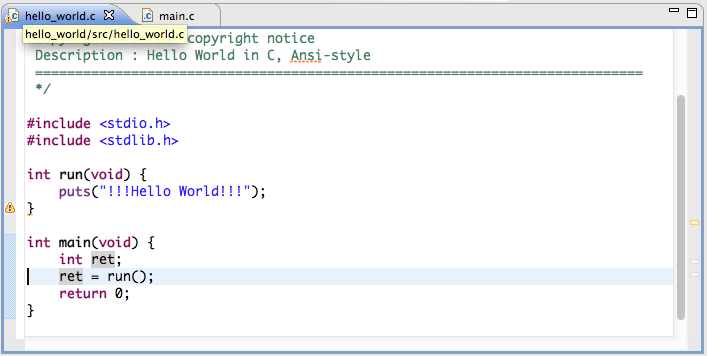

往々にして、プログラムに間違い（エラー）を入り込ませてしまうが、 それはきわめてふつうのこと。卑屈になる必要はない。
しかし、エラーがあるプログラムはビルドできない。ロボカーにも焼けない。
LPCXpresso が「ビルドに失敗しました」と表示するのを無視し、 ビルドできたと思い込んで修正前の以前のバイナリを繰り返しロボカーに焼き付け、 泥沼にはまったチームが過去にはあった。
ビルド時にエラーを見つけると LPCXpresso は エラーが見つかった行の左に赤丸にペケの マークを表示する。

ウィンドウの右の方に見える はそのエラーがプログラム全体のどのあたりにあるかを示している。 （スクリーンショットは黄色っぽいが本来は赤です）。
の上にカーソルをあわせると、どんなエラーかがポップアップする。

上の例ではとじ括弧が余計だ。それを削除し、セーブするか、ビルドすると 、 は消える。
プログラムのどこかに一カ所でも があるときはビルドは失敗する。 の原因を LPCXpresso の助けを得、あるいは自力で解決しなければ、 ビルドできない。ここが勉強のしどころだ。
時には が表示されることがある。
は警告（warning）といい、ビルドは失敗しないものの、 エラーにつながる箇所であることを示すものだ。たとえば下の例では 関数 run() の戻り値は int と宣言しているのに、戻り値を return していない。

ビルドには成功しても、run() を呼び出す関数（ここでは main()) でその戻り値を利用したりすると、戻り値がないんだから確実にエラーとなる。
どれが軽微なミスで、 どれが重大なエラーにつながるかは場数を踏まなければわからないかも。
プログラムに表示された 警告マーク の意味がわからなかったらとりあえず hkimura や TA に質問してみよう。
今期の授業が終わる頃には警告の意味を理解し、修正できるようになる(はず)。なってほしい。